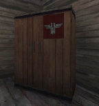
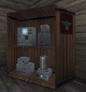
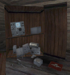

© 2003 Splash Damage, Ltd. All Rights Reserved.

| Wolfenstein: Enemy Territory Documentation © 2003 Splash Damage, Ltd. All Rights Reserved. |
|
The command post comes in two different variants: individual team or neutral team. The neutral team version is the most complex to set up because it involves so many different components. The command post totally relies on scripting to work, so using the existing scripts as a template will save you loads of time.
|  | Closed model Axis models/mapobjects/radios_sd/compostaxisclosed.md3 models/mapobjects/radios_sd/compostaxisclosed.skin Allied models/mapobjects/radios_sd/compostalliedclosed.md3 models/mapobjects/radios_sd/compostalliedclosed.skin Modelscale 1.5 |
|  | Built model Axis models/mapobjects/radios_sd/compostaxisopened.md3 models/mapobjects/radios_sd/compostaxisopened.skin Allied models/mapobjects/radios_sd/compostalliedopened.md3 models/mapobjects/radios_sd/compostalliedopened.skin Modelscale 1.5 |
|  | Damaged model Axis models/mapobjects/radios_sd/compostaxisdamaged.md3 models/mapobjects/radios_sd/compostaxisdamaged.skin Allied models/mapobjects/radios_sd/compostallieddamaged.md3 models/mapobjects/radios_sd/compostallieddamaged.skin Modelscale 1.5 |
Entity Requirements
The command post is essential a
func_constructible entity
with three different models for visual representation. The command post models
are setup as game_models so that they can be swapped in and out of the game
easily. Each separate section of the command post has targetname and scriptname
keys so that they can be referred to by the script system.
All constructible items in Enemy Territory must have a trigger_objective_info entity. When the player is near the trigger_objective_info entity a message is displayed on screen. Whatever is defined in the track key is used as the onscreen text message.
Important note: The trigger_objective_info is a brushwork entity and must contain an origin brush; otherwise it will appear half way between its current map position and '0 0 0' map position on the command map.
In order for the command post to appear on the command map as a constructible item it must be linked to a certain entity type. The func_constructible entity tells Enemy Territory who owns the construction (Allies/Axis), what state it starts in and if it can be destroyed or not.
The func_constructible entity defines where the explosives can be put by the player so that the construction is destroyed. Because of this restriction the func_constructible entity is usually the same physical size as the command post when built. The clip brush used for the 'built' command post game model is setup as a func_constructible entity.
For each command post game model a rough set of clip brushes will need to be created to mirror the shape of the model. All the command posts in the current Enemy Territory maps were setup with roughly the correct metal/wood clip brushes.
Once all the clip brushes have been created an origin brush will need to be added and then everything converted into a script_mover entity. Because the clip brushes for the 'built' game model were used as a func_constructible entity, only the 'closed' and 'damaged' clip brushes will need to be converted to script_mover entities.
Entity summary
3 command post game models (Allied, Axis and Neutral)
1
trigger_objective_info
entity
1 clipbrush
func_constructible
entity
2 clipbrush
script_mover
entities
1
info_limbo_camera
(all command posts are secondary objectives)
All the above entities need targetname and scriptname keys and with that many inter-linked entities to keep track of it can get confusing. The command posts behave in a similar way across most of the maps and if the key/values are standard then it makes referring to them in the script easier. Here is a list of standard names that were used with the command posts.
| Command post models: | <axis/allied>_radio_<closed/built/destroyed>_model |
| Clipbrush entities: | <axis/allied>_radio_<closed/built/destroyed> |
| Trigger_objective_info entity: | <axis/allied>hqradio_toi |
Scripting for Command Posts
The primary entity for controlling the construction/deconstruction of the
command post is the func_constructible entity. This entity has many
functions
as summarised below:
| spawn: | This function is run the first time upon starting the map. All spawn functions
should have a wait command before processing any other commands because not all
entities are initially ready when the map is first loaded.
All constructible items in Enemy Territory must setup their construction class when they spawn. This determines how much 'charge bar' time to be used while constructing. (There are currently 3 types of construction classes defined.) |
| setup: | This is a custom trigger function which sets the initial speed at which the 'charge bar' is replenished. (Called by the spawn function) |
| buildstart: | This function is called once the construction has been started. The 'destroyed' and "closed" game models are hidden and the 'built' game model is displayed in a translucent state. |
| built: | This function is called once the construction has been finished. The 'built' game model is displayed and the command post features are enabled. The 'charge bar' times are adjusted, team VO updated, command post status changed and the secondary objective completed/failed for the relevant team. |
| decayed: | If the construction is not completed within 30 seconds (current default) then this function is called. The construction will be reset back to a 'closed' or 'damaged' game model state. |
| death: | This function is called once the construction has been destroyed. The 'destroyed' game model is displayed and the command post features are disabled. The 'charge bar' times are adjusted, team VO updated, command post status changed and the secondary objective reset. (The tick/cross overlay is removed) |
The clip brush script_mover entities are mainly controlled from the func_constructible entity. They control the relevant game_models entities and switch states depending on what is happening with the command post.
Finally the 'built' game model is used for enabling/disabling the command post features. The 'charge bar' times are adjusted for all classes and the VO is updated for the relevant team. The sethqstatus script command will inform all team members about landmines being close by. (Command post feature)
When the command post is constructed / damaged a sound speaker entity (positioned infront of the command post) which is enabled / disabled via the script using new commands. All the speaker sounds in the maps where placed by the new speaker sound system built into the game executable.